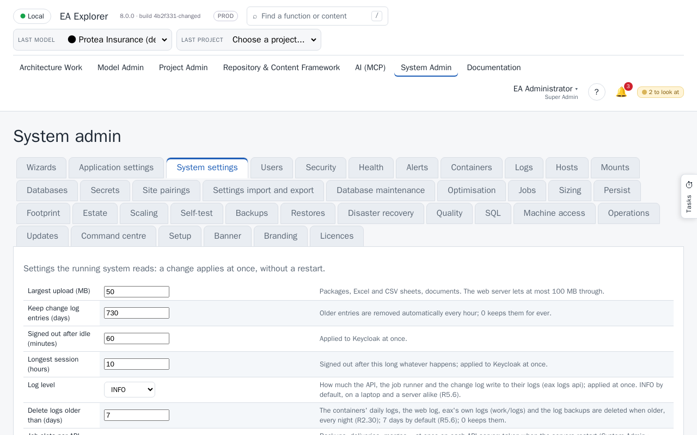

Receive webhooks
For: Developers, System Admin
Signed messages to your system when something happens in EA Explorer.

#/admin/systemWhy do this
A webhook sends a message to another system when something happens (a commit, an approval, a retirement), so it can act at once instead of polling. See Data in and out: integration.
The architecture is most useful where decisions are made, which is often outside EA Explorer: in reports, spreadsheets, other systems. Data leaves in the shapes those places need, from the same trusted model.
In TOGAF terms: Communicating the architecture: views and data for stakeholders and other systems. See EA Explorer and the TOGAF Standard.
The goal: Another system is told the moment something changes.
Before you start An IT Admin or Super Admin adds the webhook.
Steps
- System Admin › Settings › System settings, Webhooks: Add webhook with your address and the kinds it receives (commits, metamodel changes, requests, models; none ticked means all).
- EA Explorer sends each event as JSON to your address, signed: check the
X-EAX-Signatureheader (HMAC-SHA256 of the body with the webhook's secret) before trusting it. - Each delivery and its answer is kept, so failed ones can be seen.